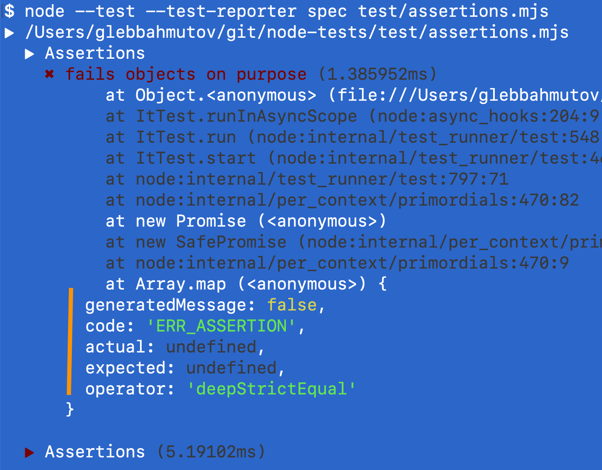
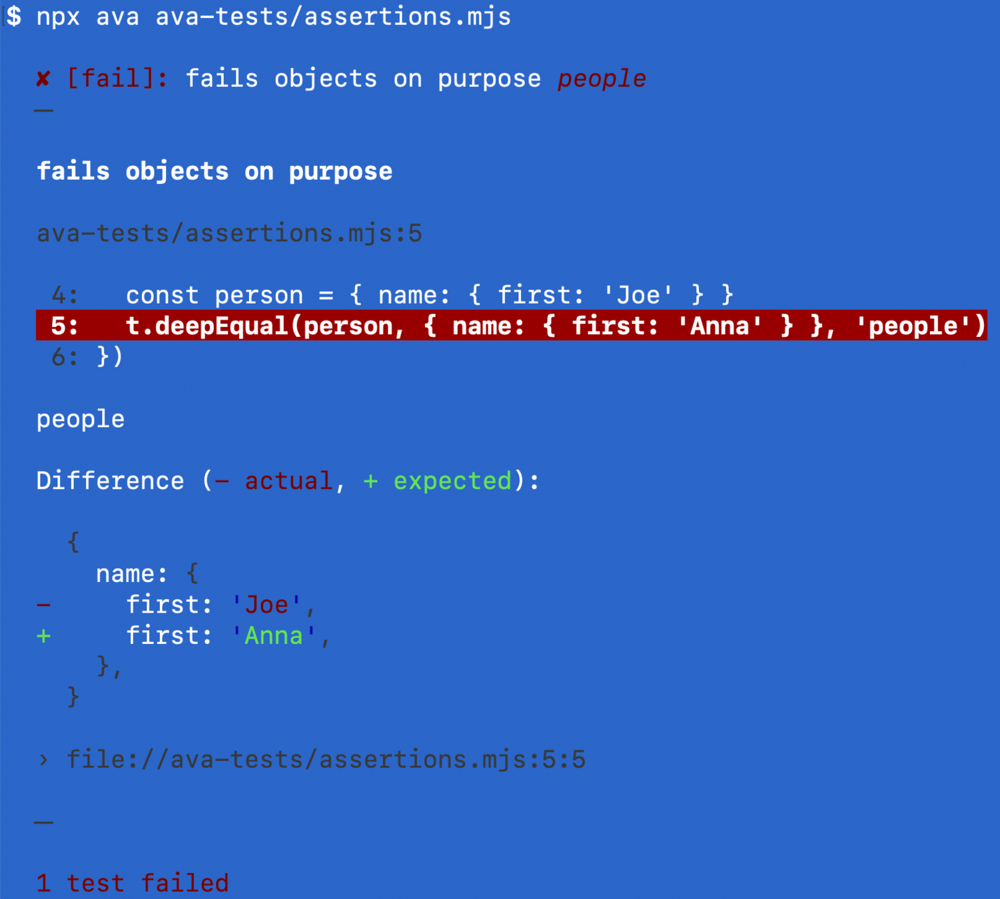
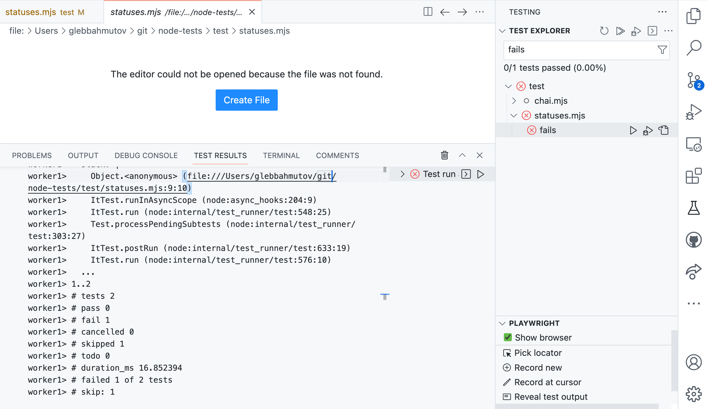

In March of 2022 Node.js got a new built-in test runner via node:test module. I have evaluated the test runner and made several presentations showing its features and comparing the new built-in test runner with the other test runners like Ava, Jest, and Mocha. You can flip through the slides below or keep reading.
- History
- Node test runner
- The test module
- Installation
- Test execution
- Parallel tests
- The test syntax
- Test reporters
- Test statuses
- Assertions
- Test filtering
- Continuous integration
- Spies and stubs
- TypeScript
- Miscellaneous features
- Only test
- Dynamic tests
- Code coverage
- Missing features
- Summary
History
Node.js has appeared in 2009 and for the first 13 did not have a built-in test runner. This gave rise to a number of 3rd party test runners
| Test runner | Current major version | Age (years) |
|---|---|---|
| mocha | v10 | 11 |
| tap | v16 | 11 |
| tape | v5 | 10 |
| ava | v5 | 9 |
| jest | v27 | 7 |
I even wrote my own test runner 11 year ago: gt
I personally think Node.js follows the same "minimal core" as JavaScript itself. Thus things like linters, code formatters, and test runners are better made as 3rd party tools. While this was a good idea for a long time, now any language without a standard testing tool seems weird. Deno, Rust, Go - they all have their own built-in test runners.
Currently my favorite JavaScript testing stack is Ava for Node and Cypress for the web testing.
Node test runner
finally in Node v18 a new built-in test runner was announced.
It was marked as experimental, and already less than a year later was marked as stable in Node v20.
From the first announcement on April 19th 2022 to the stable version announcement on March 8th 2023 it took less than a year. I think this is precisely because there are so many good 3rd party test runners that the node:test could quickly implement the features that the testing community needs and that were validated by mocha, ava, jest, and others.
The test module
üéÅ All source and test examples I show in this blog post can be found in my bahmutov/node-tests repo.
The new node:test module adds two things:
- The new
testfunction to write your tests
1 | import test from 'node:test' |
- The
--testcommand line flag in Node itself
1 | # run all tests |
Tip: if a JavaScript source file imports from node:test you can execute the tests even without the --test CLI flag.
The node:test works great with another built-in Node module that has been around for a long time node:assert
1 | import test from 'node:test' |

Installation
Having a built-in node:test module saves time downloading and installing a 3rd party module and its dependencies. All you need is to have the right Node version. The test module has been back-ported to other Node.js versions. I used Node v19 to evaluate the test runner, and all I needed to "install" it was to say "nvm install" because I use nvm tool on my machine.
1 | $ nvm ls-remote |
Other test runners all download and use 100s of NPM dependencies
| Test runner | NPM packages installed |
|---|---|
| Mocha | 78 |
| Mocha + Chai + Sinon | 445 |
| Ava | 198 |
| Jest | 429 |
Installing dependencies takes time. For example, time how long it takes to add Jest:
1 | $ npm i -D jest |
Test execution
Let's find and run all tests
1 | $ node --test |
Or run tests in a JS file that imports from node:test
1 | $ node tests/demo.mjs |
Running tests works great with the new built-in Node watch mode
1 | $ node --watch tests/demo.mjs |
Node test runner can find all test specs following a naming convention. Given the following folder structure with a mixture of source files and test files:
1 | tests/ |
You can run all tests using the command
1 | $ node --test tests/names |
In summary, any source file that starts or ends its name with "test" will be considered a spec file with tests.
Parallel tests
You can explicitly mark tests to run in parallel using concurrency parameter
1 | describe('parallel tests', { concurrency: true }, () => { |
The above two tests will run in parallel and finish in 5 seconds (since each takes 5 seconds to run)
The test syntax
The tests use modern async/await syntax, and you can nest tests inside other tests, and even create new tests dynamically
1 | import test from 'node:test' |
Note: be careful with making syntax mistakes. For example omitting the t in the nested t.test call will lead to very confusing errors.
BDD syntax
I prefer to nest tests using suites of tests with describe and it callbacks. They are included in the node:test module.
1 | import { describe, it } from 'node:test' |
By default Node test runner uses TAP output, and it considers the above test to have just 1 top-level test. Which looks confusing honestly, since I would consider "subtest 1" and "subtest 2" to be the real tests.
Test reporters
By default, node:test can generate TAP, spec, and dot reports
1 | $ node --test --test-reporter tap # default |
You can generate several reports, just need to redirect each one to a different output stream
1 | $ node --test --test-reporter dot \ |
Tip: make sure to specify all test runner options before listing the spec files or folders
1 | # üö® DOES NOT WORK |
I would consider putting the test command into the package.json scripts
1 | { |
The TAP output protocol is widely used and you can pipe it into 3rd party reporters, for example into faucet
1 | # npm i -D faucet |
Test statuses
Node test runner has 5 test statuses
1 | it('works', () => { |
If the above tests finish, the test summary will show:
1 | i tests 2 |
The "pass" and "fail" are obvious. The first test passes, the second one has a failing assertion assert.equal(2, 5) so the test fails. What are the "cancelled", "skipped", and "todo" statuses?
Let's look at the "todo" and "skipped" tests
1 | it.todo('loads data') |
The "todo" tests are the ones we plan to implement. The skipped tests are the ones that we have, but they are failing for some reason, so we disabled them to investigate. I would advise to add a comment with a GitHub / Jira issue link above the skipped tests to communicate to everyone why the test is skipped.
The "cancelled" tests are special. Consider the following test file where the before hook throws an error
1 | before(() => { |
The tests works and works again did not even execute - because the before hook failed. Thus these tests were cancelled.
Tip: it is fun to compare Node test statuses to Cypress Test Statuses.
Assertions
By default you can use node:test by throwing your errors or by using the built-in node:assert module
1 | import assert from 'node:assert/strict' |
The number of built-in assertions is quite small compared to the assertion libraries like Chai or built into Jest. Anything more complicated, like checking property inside an object is unavailable
1 | expect({ /* object */ }).to.have.property(x) |
Of course, you can use Chai with node:test
1 | // import assert from 'node:assert/strict' |
What I feel is missing still are good and helpful error messages when an assertion fails. For example, lets compare two strings that are different by a single character: Hello and Helloz
1 | import { describe, it } from 'node:test' |
Here is the error shown in the terminal
Now let's compare two objects that have different nested property
1 | it('fails objects on purpose', () => { |
The terminal error is not terribly helpful in this case

Let's take the same test and use Ava test runner and see the error message
1 | import test from 'ava' |

Ava shows great errors and the string difference when comparing two strings
1 | import test from 'ava' |
Mocha test runner + Chai assertion library shows object differences intelligently
1 | import { it } from 'mocha' |
You can use Chai assertions with node:test but the error is still incomplete and is missing any useful information
1 | import { it } from 'node:test' |
I think the assertion messages are the weakest link the node:test today compared to other test runners.
spok assertions
My favorite assertion library for checking objects is spok. It now works with node:test
1 | const test = require('node:test') |
The failed assertion is less than ideal, but does show passing and failing predicates
Tip: I love spok because it allows comparing the values and types and general predicates for each property in large objects. Here is a typical test and its terminal output.
1 | // https://github.com/thlorenz/spok |
This is why I constantly use spok in my Cypress tests via cy-spok plugin.
Test filtering
You can pick the test to run by part of its title using --test-name-pattern argument, skipping all other tests. If you have three tests with these names:
1 | it('works @sanity', () => { |
Then you can run the two tests with the string @sanity in their titles using
1 | # run tests with "@sanity" in the title |
It is a little unclear which tests were skipped, and all files are reported, there is no "pre-filtering" of specs
For example, if we use the spec test reporter, it just reports all the tests, without any indication that some of the tests were skipped
You can run tests with titles matching one of several variants by repeating the --test-name-pattern argument.
1 | # run tests with "@sanity" or "@feature" |
Continuous integration
Running node:test on CI is really simple - there is nothing to install, just need to use the right Node version. If you are using GitHub Actions the simplest workflow could be:
1 | name: ci |
Spies and stubs
Spying on method calls and changing their behavior during tests is an important feature to have for any testing system. For example, if we want to change the return of the method person.name() we would stub it in our test
1 | const person = { |
The Sinon.js is the most popular and powerful JavaScript library for spying and mocking methods in my opinion. The new node:test module includes spying and stubbing API that is pretty good.
1 | import { it, mock } from 'node:test' |
The API is powerful, but the assertions are pretty verbose and it is harder to write method stubs that resolve asynchronously. It is a long way from Sinon.js + Chai-Sinon combination.
Mocking ESM modules
If you need to mock ES6 import and export directives, you will need to bring in a separate module loader. Let's take an example with 3 files: math.mjs, calculator.mjs, and the spec file.
1 | // math.mjs |
By default, the test calls calculate which calls the real add function from math.mjs. If you want to mock the exported add function as the calculator.mjs sees it, then you need to bring something like esmock loader
1 | // the spec file |
Notice that we now import the calculator.mjs module inside the test to be able to change its behavior. We can even construct the math.mjs add export using the node:test mocks
1 | import { it, mock } from 'node:test' |
TypeScript
To write specs using TypeScript or unit test TS files, node:test relies on 3rd party source file loaders, like ts-node.
1 | { |
Let's write a TS spec
1 | import { it } from 'node:test' |
If you run the test, notice the duration. The test is very short: 5ms, but the total test run takes 1 second.
Loading and transpiling TypeScript code adds overhead. Without TS, the same test would take 100ms total.
Miscellaneous features
Timeouts
You can specify a timeout limit for each test
1 | it('works for 2 seconds', { timeout: 1000 }, async () => { |
Named skip
You can give a reason for a test to be skipped.
1 | // instead of this: |
Debugging
I used VSCode to run the tests using the following launch configuration
1 | { |
I could then launch the debugging session and step through the tests and the code
But the test output was ... sub-optimal. I could not even see any error messages from the failed assertions. I tried node:test runner VSCode extension and could get some output from the spec file and summary, but I must say it was underwhelming.

Only test
A weird feature that seems to be a poor substitute for test tags
1 | it('works for 2 seconds', { only: true }, async () => { |
By default both tests run.
If you run tests with --test-only flag, then the second test without only: true option is skipped (silently)
I would rather prefer to have it.only to run exclusive tests.
Done callback
You can call the callback argument usually called done to signal the end to the test
1 | it('succeeds', (done) => { |
If you call done with an Error object, the test fails.
1 | it('succeeds', (done) => { |
Dynamic tests
You can generate new tests while the tests are running. For example, you can fetch data and for each returned item generate its own test.
1 | import test from 'node:test' |
Code coverage
The node test runner can and will benefit from the built-in code coverage added to Node. Imagine testing math functions again
1 | // math.mjs |
If you run the tests with --experimental-test-coverage command line, the test summary includes the lines covered numbers
Missing features
Here are a few features that are present in other test runners, but not in node:test
- the number of planned assertions like Ava's
t.plan(2) - mocking clock and timers like Jest's
jest.useFakeTimers() - exit on first failure
deno test --fail-fast - expect a failure like in this Ava's example
1 | test.failing('found a bug', t => { |
Summary
| Feature | Mocha | Ava | Jest | Node.js TR | My rating |
|---|---|---|---|---|---|
| Included with Node | üö´ | üö´ | üö´ | ✅ | üéâ |
| Watch mode | ✅ | ✅ | ✅ | ✅ | üéâ |
| Reporters | lots | via TAP | lots | via TAP | |
| Assertions | via Chai ✅ | ✅ | ✅ | weak | üòë |
| Snapshots | üö´ | ✅ | ✅ | üö´ | |
| Hooks | ✅ | ✅ | ✅ | ✅ | |
| grep support | ✅ | ✅ | ✅ | ✅ | |
| spy and stub | via Sinon ✅ | via Sinon ✅ | ✅✅ | ✅ | |
| parallel execution | ✅ | ✅ | ✅ | ✅ | |
| code coverage | via nyc | via c8 | ✅ | ✅ | üëç |
| TS support | via ts-node | via ts-node | via ts-jest | via ts-node | üê¢ |
In general, I would recommend:
- trying
node --teston new smaller projects you might start - do not port any existing projects with already existing tests
- re-evaluate in 6 months because
node:testis evolving fast
Happy node --testing!